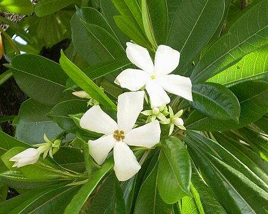

All parts are poisonous, containing an alkaloid called aconitine, which disables nerves, lowers blood pressure, and can stop the heart. Even casual skin contact should be avoided. Symptoms include numbness, tingling, and cardiac irregularity. It has been used as a poison for bullets

All parts are poisonous, especially the berries, the consumption of which has a sedative effect on cardiac muscle tissue and can cause cardiac arrest.

Contains the saponins githagin and agrostemmic acid. All parts of the plant are reported to be poisonous and may produce chronic or acute, potentially fatal poisoning, although it has been used in folk medicine to treat a range of ills, from parasites to cancer.

The seeds contain cerberin, a potent toxin related to digoxin. The poison blocks the calcium ion channels in heart muscle, causing disruption of the heartbeat. This is typically fatal and can result from ingesting a single seed. Cerberin is difficult to detect in autopsies and its taste can be masked with strong spices, such as a curry. It is often used in homicide and suicide in India
All parts are poisonous; the culprits are needle-shaped crystals of calcium oxalate called raphides, which can cause intense burning, reddening of the skin, irritation, and immobility of the tongue, mouth, and throat if ingested.[citation needed] Swelling can be severe enough to block breathing, leading to death